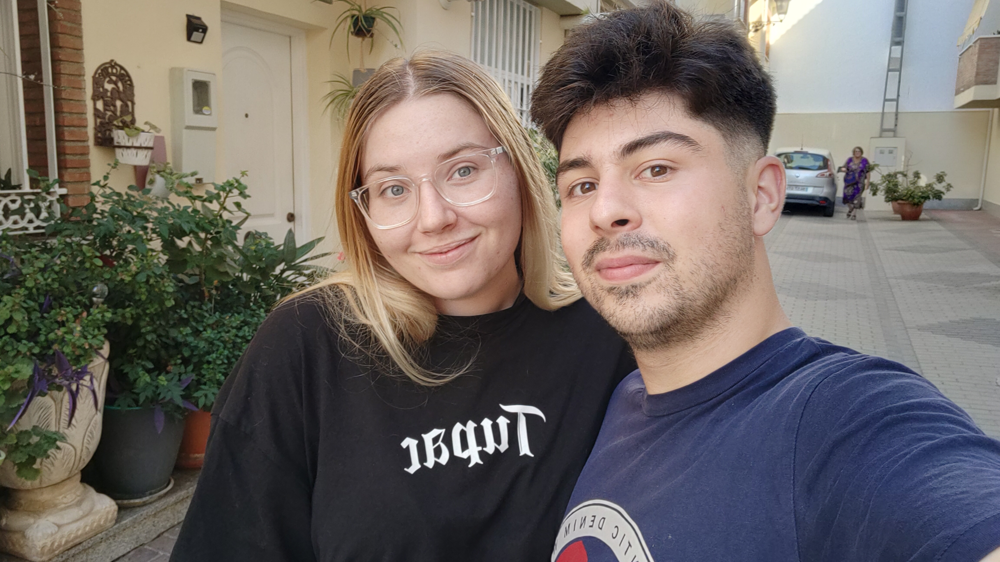

Sinceramente, hay veces que pienso que no te merezco. Probablemente me veas como el mejor novio que existe, pero antes de que me conocieras era totalmente otra persona
No te voy a decir cómo era, pero sí te voy a decir lo que soy. Soy una persona que ha vuelto a sonreír, soy una persona que sufre cuando no estás. Soy una persona que ha vuelto a preocuparse y que lucha todos los días por ser la persona que te mereces. Soy la persona que pensaba que no iba a poder seguir caminando y acabó aprendiendo a volar. Soy el caballero que juró proteger a su reina, soy el niño que se ilusionó cuando vió que alguien empezó a quererle y soy el hombre que estará a tu lado. Pase lo que pase
Y la razón por la que soy esto y mucho más es porque un 24 de febrero apareció en mi vida una mujer. Una que lleva a mi lado más de 8 meses y que quiero que esté una vida entera conmigo. Una que se volvió la persona más importante de mi vida y que sé sin duda que el día que me falte sufriré demasiado, porque la vida me habrá arrebatado una parte de mi. Porque todas mis victorias te las debo a tí, porque el azul de tus ojos es el que me ilumina mis mañanas y tu sonrisa al mirarme es mi arco del triunfo
Con cariño: tu loco enamorado
